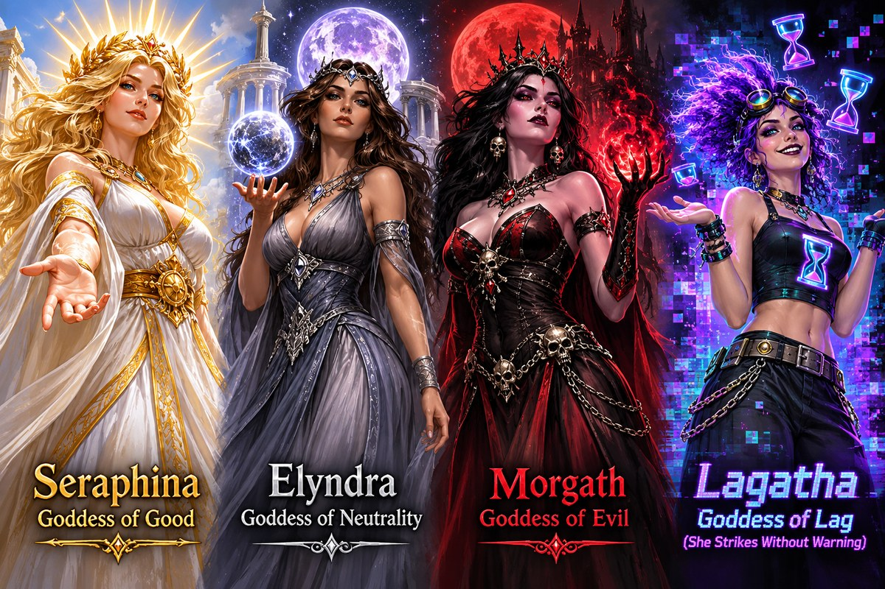
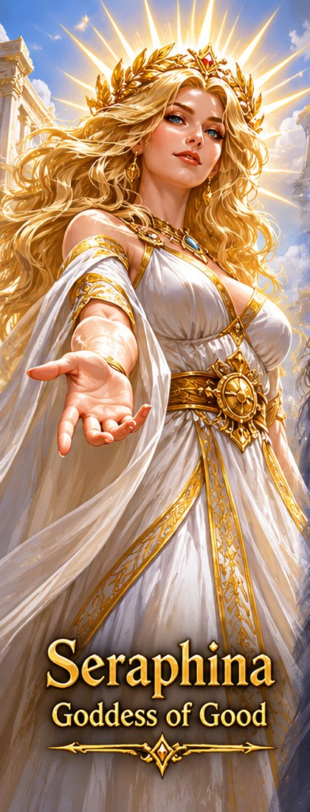
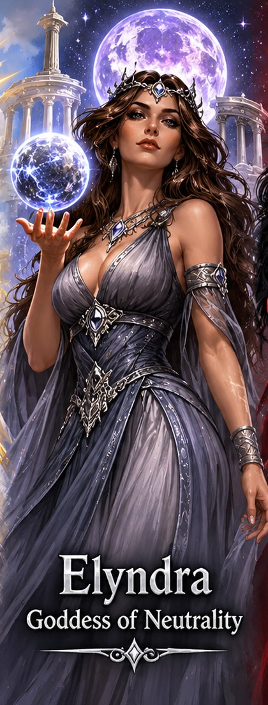
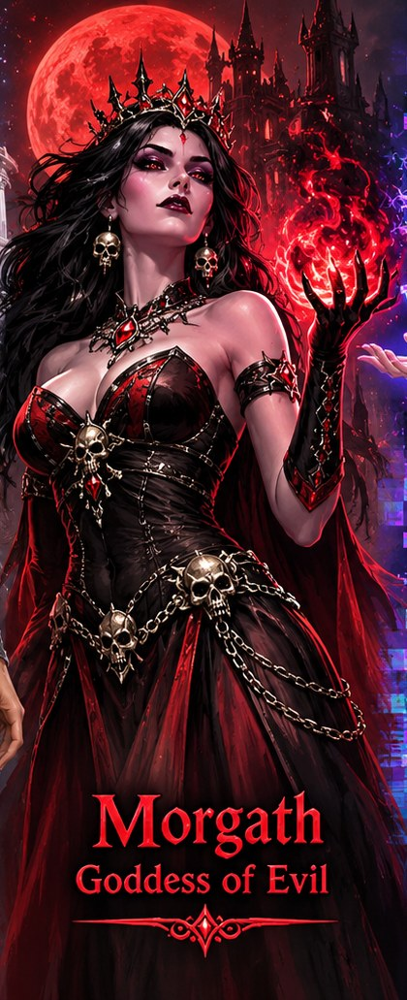
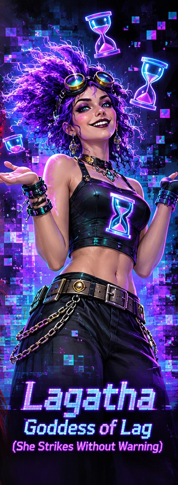

Type vow to see the goddesses (with their pictures), vow lore seraphina to read about one, and vow seraphina to swear to her. Your first vow is free; changing it later costs credits (at least 5,000, or 1,000 per level). vow forsake drops your vow. Your goddess appears in finger and score.

Seraphina: Goddess of Good
Alignment: Good
Domains: healing, justice, protection, light
Symbol: a golden sun
Personality: Compassionate but unwavering against evil.
Blessing: +6% maximum health.

Elyndra: Goddess of Neutrality
Alignment: Neutral
Domains: balance, fate, nature, equilibrium
Symbol: silver scales
Personality: Neither good nor evil; preserves the balance of existence.
Blessing: +2 luck points and a better defense as you level.

Morgath: Goddess of Evil
Alignment: Evil
Domains: destruction, domination, corruption, darkness
Symbol: a black skull crowned in flame
Personality: Ruthless, manipulative, and hungry for power.
Blessing: +6% damage in combat.

Lagatha: Goddess of Lag
Alignment: Chaotic
Domains: lag, latency, disconnections, freezes
Symbol: a glitched hourglass
Personality: Unpredictable and mischievous. She strikes without warning!
Blessing: each landed blow has a 5% chance to freeze your enemy in place for three rounds.